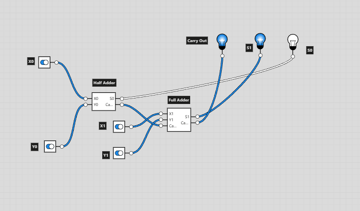
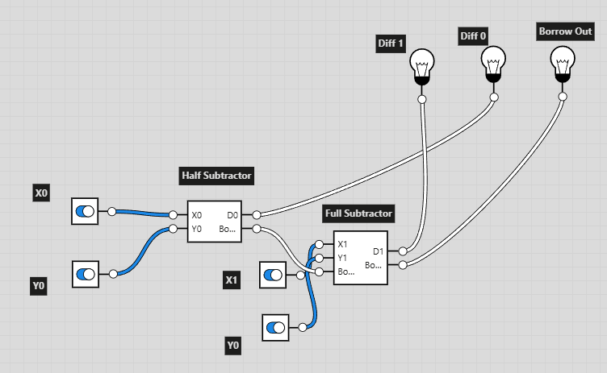

This project explores the intersection of digital logic circuits and philosophical questions about the nature of computers.

Justification:
This 2-bit addition circuit is constructed by combining a half adder and a full adder to correctly handle carry propagation
between bits. The half adder computes the least significant bit using inputs X0 and Y0, producing a sum bit (S0) and a
carry-out (C0). That carry is then passed into the full adder, which computes the most significant bit using inputs X1, Y1,
and C0.
For X = 11 and Y = 11, the half adder receives X0 = 1 and Y0 = 1, producing S0 = 0 and C0 = 1. The full adder then receives
X1 = 1, Y1 = 1, and C0 = 1, producing S1 = 1 and C1 = 1. The resulting sum bits are S1S0 = 10 with carry C1 = 1, yielding
the binary result 110, which correctly represents the decimal value 6.

Justification:
The 2-bit subtraction circuit uses a half subtractor for the least significant bit and a full subtractor for the most
significant bit in order to correctly handle borrowing across bits. The half subtractor computes the initial difference (D0)
and borrow (B0) from inputs X0 and Y0. This borrow is then passed into the full subtractor,
which computes the most significant difference bit using inputs X1, Y1, and B0.
Tracing the inputs X = 10 and Y = 01 illustrates the circuit’s behavior. The half subtractor receives X0 = 0 and Y0 = 1,
producing D0 = 1 and B0 = 1, indicating that a borrow is required. The full subtractor then receives
X1 = 1, Y1 = 0, and B0 = 1, producing D1 = 0 with no remaining borrow. The final difference is 01,
which correctly represents the decimal value 1. This design demonstrates how subtraction requires explicit
management of dependency between bits.
Our in-class discussions significantly reshaped how I think about what computers are and what they are for. One of the most thought-provoking questions raised in class was: Does a computer have to be useful, or even usable, by humans? This question stood out to me because it challenges an assumption I had always taken for granted—that usefulness is synonymous with productivity, efficiency, or problem-solving in a human-centered sense.
The discussion of unconventional computing systems, particularly the “crab computer,” pushed this idea further. The crab computer performs computation through physical interactions rather than symbolic logic, making it difficult to describe its usefulness in traditional terms. Yet, it still computes. This made me reconsider whether usefulness is an inherent property of a computer or something humans impose after the fact. If a system processes information according to rules, does it need a clear purpose to count as computation?
This question became even more concrete when we discussed the real-life Tamagotchi. Is a Tamagotchi useful? It does not optimize tasks or produce outputs in a conventional sense, but it teaches responsibility, care, and attentiveness through sustained interaction. Its value comes not from what it accomplishes, but from the relationship it creates with the user over time. In this way, the Tamagotchi suggests that computers can be useful by fostering emotional engagement rather than performing labor. The device even reverses the typical human–computer relationship: instead of serving the user, the user must serve the device. This inversion complicates the idea that technology exists solely as a tool and raises deeper questions about whether usefulness must always be defined in human-centric or instrumental terms.